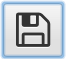
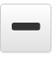
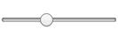

- Open your old image with the Open button!
- Save Your masterpiece with the Save Button!

- The pencil button lets you draw freely

- The Line button lets you draw straight lines

- Adjust your stroke sizes with this bar!

- The square button allows you to choose your color.
- Clicking the counter-clockwise arrow button undos your last change.
- Clicking the clockwise arrow button redos your undo.
- The Add Frame button lets you add a frame.
- Wanna get rid of everything? use the Trash button!